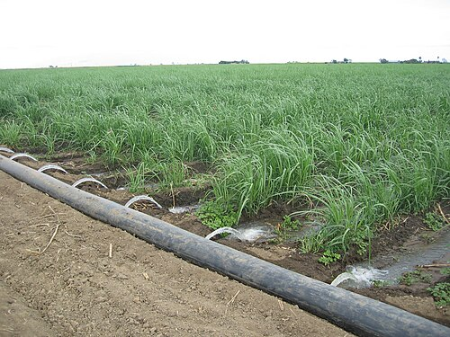
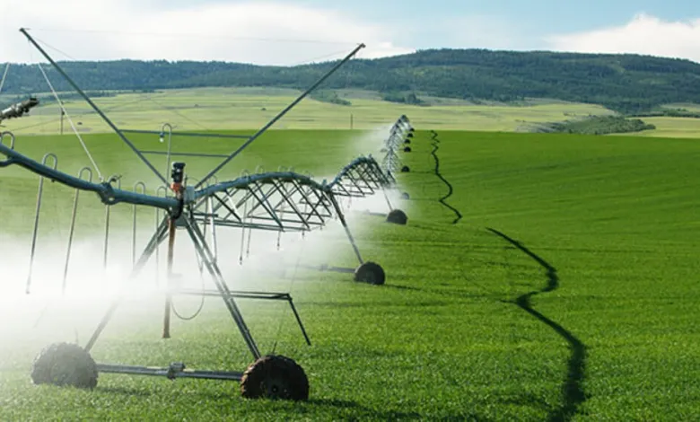
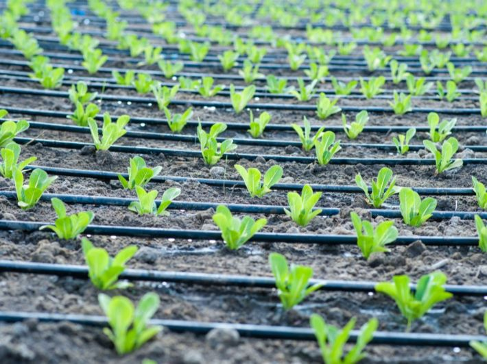

إحصاءات عن أنواع الزراعة المستخدمة في الأردن
نظرة على أبرز الإحصائيات الزراعية في المملكة
70%
من إجمالي الإنتاج الزراعي
يتركز في وادي الأردن
90%
من أنظمة الري
تعتمد على التنقيط
200+
نوع نباتي
يتم زراعته في الأردن
أنظمة الري المستخدمة في الأردن
نظرة على تقنيات الري الحديثة والمستخدمة في المملكة
الري السطحي
أحد أقدم أنظمة الري حيث يتم توزيع المياه على سطح التربة مباشرة. يستخدم في المساحات الواسعة والتربة ذات النفاذية المناسبة.
- مناسب للمحاصيل الحقلية
- تكلفة تشغيل منخفضة
- كفاءة مائية متوسطة

الري بالرش
نظام يشبه هطول الأمطار الطبيعية حيث يتم رش المياه في الهواء لتسقط على النباتات. مناسب للمحاصيل المختلفة.
- توزيع متجانس للمياه
- مناسب للمناطق المتعرجة
- كفاءة مائية عالية

الري بالتنقيط
أكثر الأنظمة كفاءة حيث يتم توصيل المياه مباشرة إلى جذور النباتات بكميات محسوبة بدقة.
- توفير مائي يصل إلى 60%
- مناسب للأشجار والمحاصيل
- كفاءة تصل إلى 90%

المحاصيل المتوفرة أو النادرة
تنوع زراعي يميز الأردن بين الوفرة والندرة
🟢 المحاصيل المتوفرة
15+ نوعالطماطم
من أهم المحاصيل في وادي الأردن
موسم الصيفالخيار
يزرع على مدار العام
طوال العامالباذنجان
من المحاصيل التقليدية
موسم الصيفالفلفل
بأنواعه المختلفة
موسم الصيف🔴 المحاصيل النادرة
8+ نوعالأفوكادو
يزرع في مناطق محدودة
ندرة عاليةالفراولة
تتطلب ظروف خاصة
ندرة متوسطةالتوت الأزرق
محصول حديث في الأردن
ندرة عاليةالفطر
يزرع في بيئات محكمة
ندرة منخفضة85%
محاصيل متوفرة
15%
محاصيل نادرة
50+
نوع محاصيل